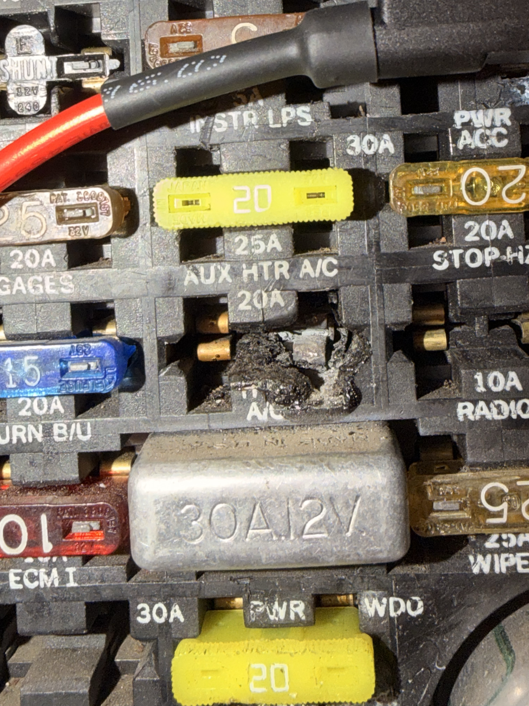
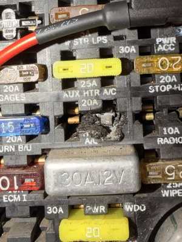
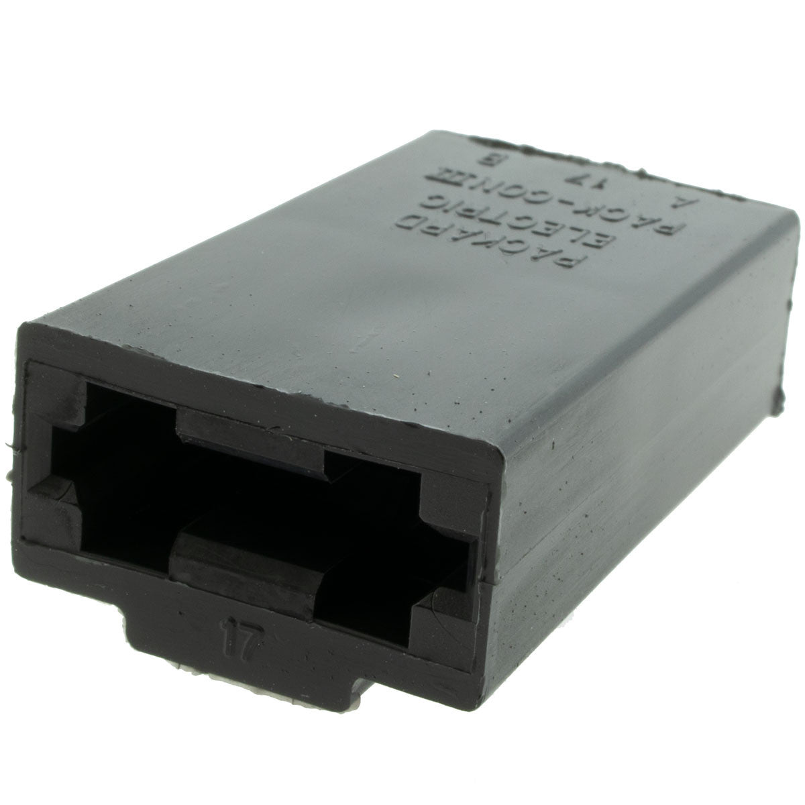
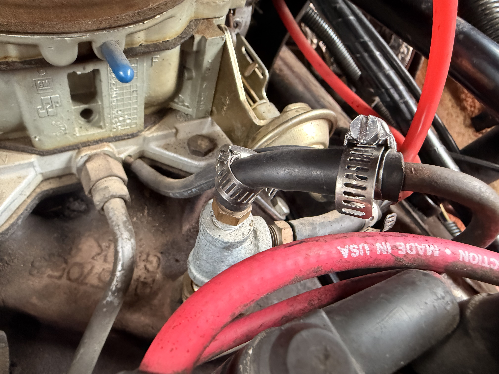
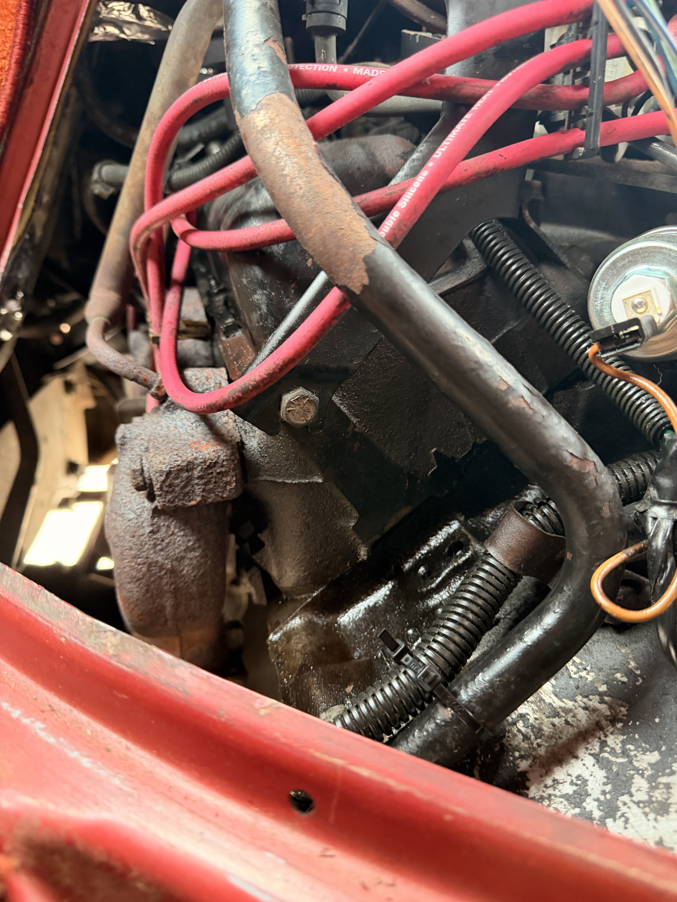

VIN: unknown | Engine: 5.0L / 5.7L V8 (Carbureted) | Transmission: TH350/TH400 Automatic
The 20A A/C fuse slot in the underdash fuse block shows severe thermal damage — the plastic housing is melted and carbonized. The fuse block likely needs full replacement. A Packard Electric replacement housing (see reference photo) has been sourced. Do not reinstall A/C fuse or operate A/C compressor circuit until fuse block is replaced and root cause of overcurrent is identified.
📷 Documented in photos — see Photo Gallery below.
The burned A/C fuse slot implies an overcurrent event in the A/C compressor, clutch, or associated wiring. Inspect A/C compressor clutch coil resistance, wiring harness for chafe/shorts, and relay before restoring power to this circuit.
| Item | Notes | Status |
|---|---|---|
| Engine Bay Hoses & Clamps | Coolant and vacuum hoses visible in engine bay (see photos). Multiple aftermarket hose clamps installed. Hoses appear serviceable but old — inspect for cracking/swelling at next opportunity. | Monitor |
| Engine / Transmission Exterior Seals | Oil residue visible on exterior of engine/transmission junction area. Watch for progression; may indicate rear main or front trans seal seepage. | Monitor |
| Rust / Body Condition | Surface rust visible on engine bay panels and frame components. Monitor structural areas; treat exposed metal as accessible. | Monitor |
| Service / Repair | Mileage | Notes | Status |
|---|---|---|---|
| Motor Oil & Filter Change | ~127,000 mi | Oil and filter replaced. Fluid spec/quantity not recorded. | ✓ Done |
| Transmission Oil Pan Replaced | ~127,000 mi | Transmission oil pan removed and replaced. | ✓ Done |
| Transmission Filter Replaced | ~127,000 mi | Internal transmission filter replaced during pan service. | ✓ Done |
| Transmission Filled – New Fluid | ~127,000 mi | Transmission refilled with new fluid. Fluid spec/quantity not recorded. | ✓ Done |
| Transmission Mount Replaced | ~127,000 mi | Transmission mount replaced. | ✓ Done |
| Cooling System – Hoses & Clamps | ~127,000 mi | Upper/lower radiator hoses replaced; aftermarket worm-gear clamps installed. | ✓ Done |
| Spark Plugs & Wires | ~127,000 mi | Plug set and ignition wires replaced as part of tune-up. | ✓ Done |
| Air Filter | ~127,000 mi | Engine air filter inspected/replaced. | ✓ Done |
| PCV Valve | ~127,000 mi | PCV valve replaced. | ✓ Done |
| Fuel Filter | ~127,000 mi | Inline fuel filter replaced. | ✓ Done |
| Battery | ~127,000 mi | Battery inspected/replaced. | ✓ Done |
| Brake Inspection | ~127,000 mi | Brake system inspected; condition documented. | ✓ Done |
🟢 Highlighted rows = newly added this update. All previously recorded services marked completed at ~127,000 mi per owner record. No dates, fluid specs, or parts numbers invented beyond what was stated.
| Service | Suggested Interval | Notes |
|---|---|---|
| Fuse Block Replacement | Immediate – before A/C use | Replace burned fuse block housing; diagnose A/C circuit before reconnecting. |
| Motor Oil & Filter | ~130,000 mi (or ~3,000 mi) | Next change due if using conventional oil at 3,000 mi intervals. |
| Coolant Flush | Inspect condition | Check coolant condition and protection level; flush if degraded. |
| Carburetor Service | As needed | Inspect carb for correct fuel delivery, choke, and idle operation. |
| Transmission Fluid Check | ~129,000 mi | Verify correct fluid level after recent trans service settles. |





| Topic | Note |
|---|---|
| Engine | Carbureted V8 (GM). Blue idle-mixture plug caps visible on carb — original factory tamper plugs still present, suggesting carb has not been rebuilt. |
| Transmission | Automatic (TH350 or TH400 likely). Pan, filter, mount, and fluid replaced at ~127,000 mi. Pan condition and fluid spec not formally documented. |
| Fuse Block | Underdash fuse block has catastrophic thermal damage at A/C slot. Do not operate A/C until repaired. Replacement Packard Electric housing sourced. |
| Electrical | Aftermarket large red battery/power cables visible running through engine bay. Verify correct gauge and termination at all connection points. |